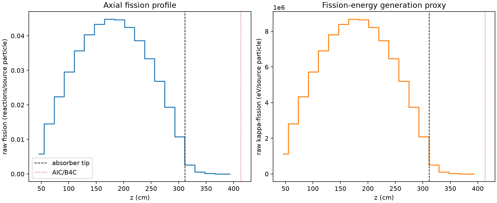
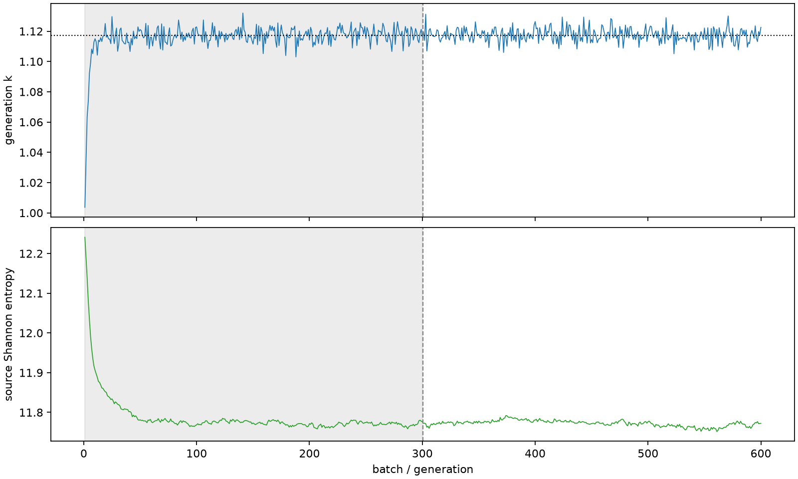

| field | value |
|---|---|
| experiment | V2-STAGE_256_OGRENCI_03-0022 |
| k | 1.1173814328084806 |
| MC standard error | 0.00017924767240669863 |
| seconds | 956.330643149995 |
| acceptance | not_assessed |
| convergence | review_required |
Completed is output integrity only; physical and statistical review required. Zero tallies do not prove zero production or zero uncertainty.
| diagnostic | value |
|---|---|
| geometric fuel voxels | 5280 |
| zero fission tally voxels | 0 |
| low signal fuel voxels | 506 |
| low signal fission share | 8.418678669391757e-05 |
| low signal kappa share | 8.421676431593106e-05 |
| important fission share | 0.9500404299189431 |
| previous filter included | 4774 |
| duration estimate s | 1562.5173488400023 |
| actual minus estimate s | -606.1867056900073 |
| fission relative MC error | statistics |
|---|---|
| all_geometric_fuel | {"voxels": 5280, "positive_mean_voxels": 5280, "zero_mean_voxels": 0, "undefined_relative_error_voxels": 0, "median": 0.010250992818587525, "p95": 0.32225298198464425, "maximum": 0.8481845169022021} |
| low_signal | {"voxels": 506, "positive_mean_voxels": 506, "zero_mean_voxels": 0, "undefined_relative_error_voxels": 0, "median": 0.34535905060098604, "p95": 0.6144163465768268, "maximum": 0.8481845169022021} |
| important_95pct | {"voxels": 3378, "positive_mean_voxels": 3378, "zero_mean_voxels": 0, "undefined_relative_error_voxels": 0, "median": 0.008441495229112394, "p95": 0.012689922223838317, "maximum": 0.015246906659892432} |
| outside_previous_filter | {"voxels": 506, "positive_mean_voxels": 506, "zero_mean_voxels": 0, "undefined_relative_error_voxels": 0, "median": 0.34535905060098604, "p95": 0.6144163465768268, "maximum": 0.8481845169022021} |
| kappa_fission relative MC error | statistics |
|---|---|
| all_geometric_fuel | {"voxels": 5280, "positive_mean_voxels": 5280, "zero_mean_voxels": 0, "undefined_relative_error_voxels": 0, "median": 0.01023885410416904, "p95": 0.3219734407156787, "maximum": 0.8474650943135097} |
| low_signal | {"voxels": 506, "positive_mean_voxels": 506, "zero_mean_voxels": 0, "undefined_relative_error_voxels": 0, "median": 0.34465717088019254, "p95": 0.6128986532116365, "maximum": 0.8474650943135097} |
| important_95pct | {"voxels": 3378, "positive_mean_voxels": 3378, "zero_mean_voxels": 0, "undefined_relative_error_voxels": 0, "median": 0.008431625232032936, "p95": 0.012675248261232383, "maximum": 0.015228316073905401} |
| outside_previous_filter | {"voxels": 506, "positive_mean_voxels": 506, "zero_mean_voxels": 0, "undefined_relative_error_voxels": 0, "median": 0.34465717088019254, "p95": 0.6128986532116365, "maximum": 0.8474650943135097} |
| axial bin | fission share | kappa-fission share |
|---|---|---|
| 1 | 0.012683444620120894 | 0.012684035232948278 |
| 2 | 0.03193691095183511 | 0.03193681358370491 |
| 3 | 0.04914318432759433 | 0.04914319329593525 |
| 4 | 0.06488834595465626 | 0.06488807084646274 |
| 5 | 0.07826848293387907 | 0.07826790123682076 |
| 6 | 0.088459242598174 | 0.08845901120587668 |
| 7 | 0.0951651529832744 | 0.0951646714590108 |
| 8 | 0.09822464132370967 | 0.09822408441489881 |
| 9 | 0.09790428708014462 | 0.09790392572885052 |
| 10 | 0.09304743057521382 | 0.09304730853426453 |
| 11 | 0.0846613842212427 | 0.08466117268676089 |
| 12 | 0.07330909548278067 | 0.07330891568314085 |
| 13 | 0.05890621949194987 | 0.058905936575063385 |
| 14 | 0.04235760044012719 | 0.04235750857071752 |
| 15 | 0.023674325082500825 | 0.023674547306273084 |
| 16 | 0.005658561110961144 | 0.005660503099747631 |
| 17 | 0.0013011062075058524 | 0.0013016620636459137 |
| 18 | 0.00032046230354167756 | 0.0003205831945159702 |
| 19 | 7.493726262637715e-05 | 7.496217806572284e-05 |
| 20 | 1.518504816133641e-05 | 1.5193103295729058e-05 |
Histories include the inactive-to-active transition at batch 300. kappa-fission approximates fission energy production, not total heat deposition.

